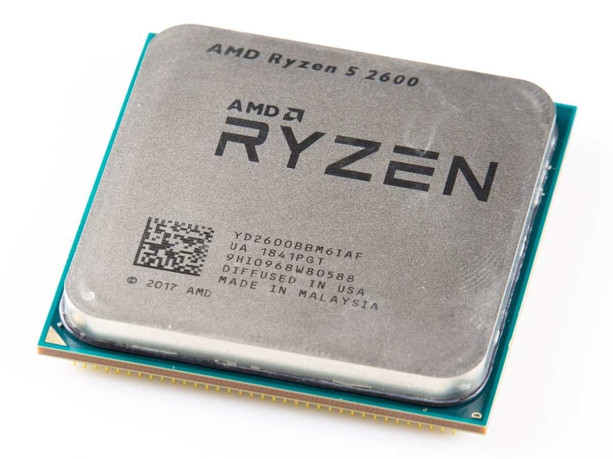
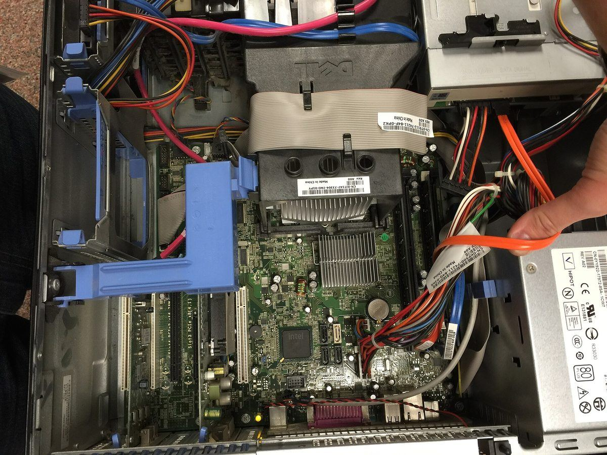
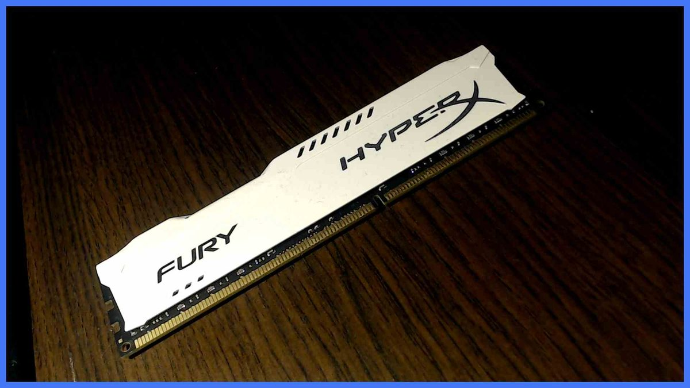
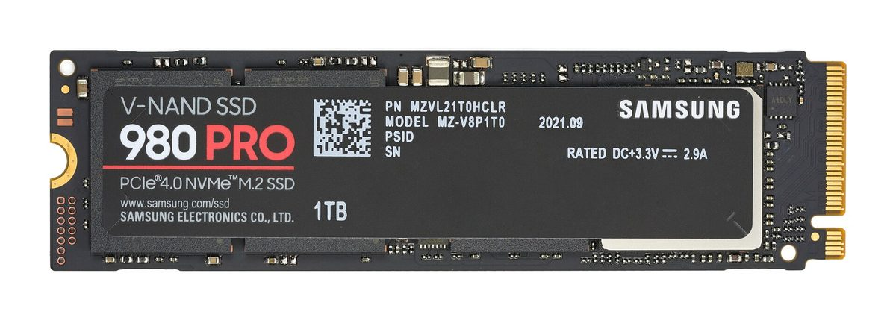
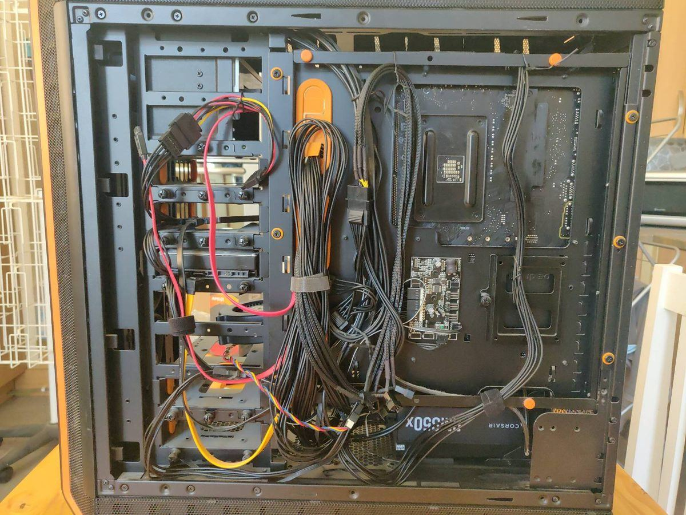
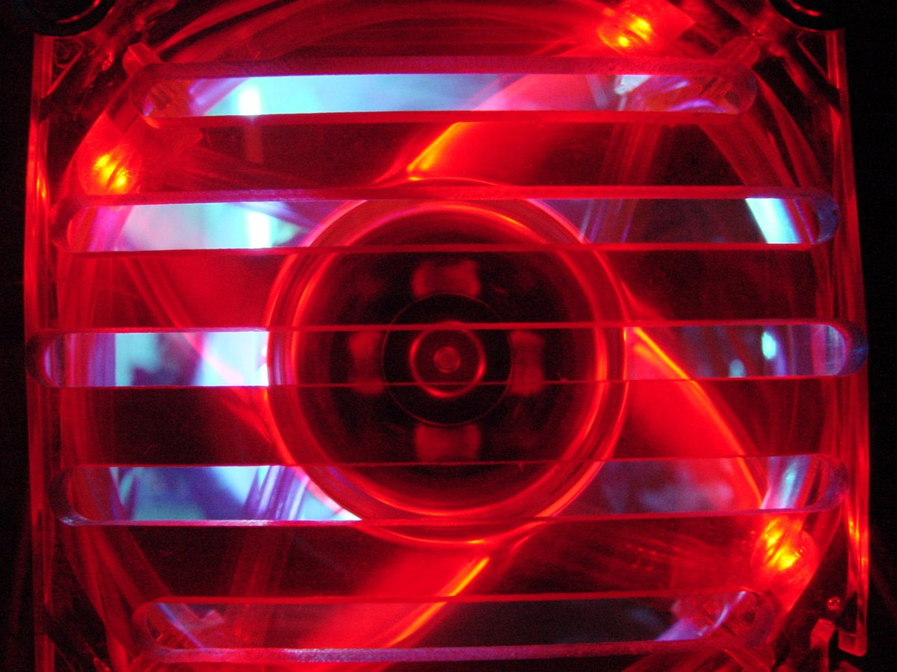
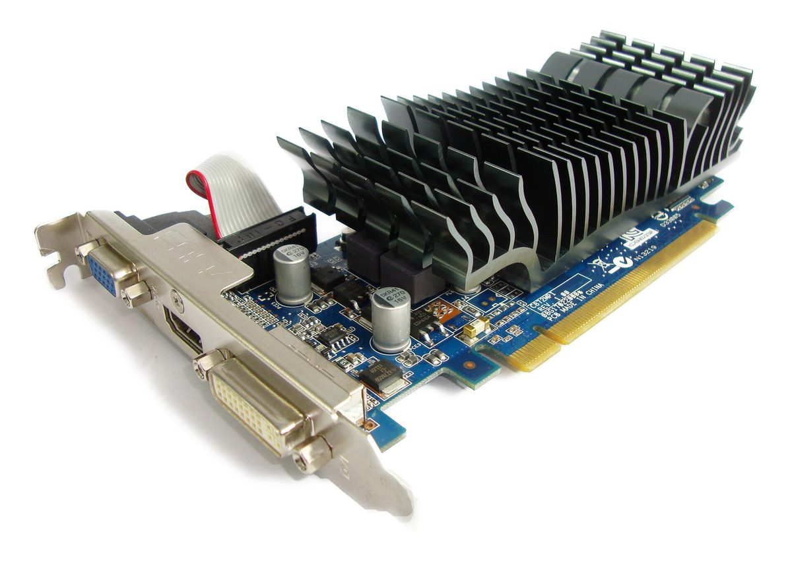
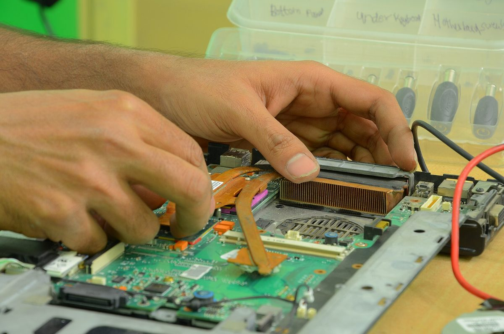

Cómo montar tu primer PC paso a paso
Guía completa para montar tu primer ordenador desde cero: instalación del procesador (CPU), la memoria, el almacenamiento y las conexiones, primer arranque e instalación del sistema operativo.

Lo esencial en 30 segundos
- Comprueba la compatibilidad entre procesador, placa base y memoria antes de comprar los componentes.
- No fuerces ningún componente: si no encaja, revisa la orientación y consulta el manual.
- Conecta el monitor a la tarjeta gráfica si has instalado una dedicada, no a la placa base.
En este artículo
- 01Reúne todos los componentes
- 02Instala el procesador y el disipador
- 03Coloca la memoria RAM
- 04Monta la placa base en el gabinete
- 05Instala el almacenamiento
- 06Instala la fuente de alimentación
- 07Conecta el cableado y los ventiladores
- 08Cierra el gabinete y conecta los periféricos
- 09Enciende el PC por primera vez
- 10Instala el sistema operativo
- 11Instala los controladores y actualizaciones
- 12Configura tu cuenta y personaliza el equipo
- 13Comprueba el resultado y cuida tu equipo
Reúne todos los componentes
Antes de empezar el montaje, reúne todos los componentes y comprueba que la placa base es compatible con el procesador, la memoria y el resto del equipo. Prepara también un destornillador de estrella, bridas o velcro para el cableado y, si puedes, una pulsera antiestática para evitar descargas.
La lista básica incluye el procesador, la placa base, los módulos de memoria RAM, el almacenamiento (SSD o HDD), la fuente de alimentación, el gabinete, la tarjeta gráfica si tu procesador no tiene gráficos integrados, el monitor, el teclado y el ratón. Ten a mano el manual de la placa base: es la mejor guía para saber dónde va cada conector.

Instala el procesador y el disipador
Localiza el zócalo del procesador en la placa base y levanta la palanca de sujeción. Alinea la marca triangular del procesador con la del zócalo, déjalo caer suavemente y baja la palanca. No fuerces nunca el procesador: si no encaja, revisa la orientación.
Aplica una pequeña cantidad de pasta térmica en el centro del procesador y coloca el disipador siguiendo las instrucciones del fabricante. Aprieta los tornillos en cruz y conecta el ventilador del disipador al conector de la placa base marcado como CPU_FAN.
“Localiza el zócalo del procesador en la placa base y levanta la palanca de sujeción.”
Coloca la memoria RAM
Abre los pestillos de las ranuras de memoria y alinea la muesca del módulo con la de la ranura. Presiona con firmeza y de forma uniforme hasta que los pestillos se cierren con un clic. Si la placa base lo permite, instala los módulos en las ranuras indicadas por el manual para aprovechar el doble canal.
Evita tocar los contactos dorados de los módulos y no los fuerces si no entran: casi siempre es porque están al revés o mal alineados.

Monta la placa base en el gabinete
Coloca el escudo de conexiones (I/O shield) en el hueco trasero del gabinete. Comprueba que los separadores metálicos coinciden con los agujeros de la placa base y atorníllala sin apretar en exceso, siguiendo un orden en cruz.
Antes de atornillar, comprueba que no queda ningún separador suelto debajo de la placa: podría provocar un cortocircuito.
Instala el almacenamiento
Si usas un SSD M.2 NVMe, insértalo en la ranura correspondiente con el ángulo indicado y fíjalo con el tornillo o la pestaña del manual. Si usas un SSD o HDD de 2,5 o 3,5 pulgadas, monta la unidad en el soporte del gabinete y conecta el cable de datos SATA a la placa base y el de alimentación a la fuente.
Deja el cable de datos bien sujeto y evita doblarlo en exceso, sobre todo en los conectores.

Instala la fuente de alimentación
Monta la fuente en el compartimento del gabinete con el ventilador orientado según el diseño de la caja. Atorníllala firmemente y conecta el cable de tierra del enchufe; una fuente de calidad protege al resto de componentes.
Si la fuente es modular, conecta primero los cables que vayas a necesitar y deja el resto guardados para no dificultar el flujo de aire.
Conecta el cableado y los ventiladores
Conecta el cableado de alimentación: el cable de 24 pines a la placa base y el de 8 pines de la CPU al conector EPS. Lleva la alimentación SATA al almacenamiento y conecta los cables del panel frontal: encendido, reinicio, USB y audio.
Conecta los ventiladores del gabinete a los conectores de la placa base o directamente a la fuente mediante adaptadores. Revisa que cada cable quede bien asentado y sin tensión.

Cierra el gabinete y conecta los periféricos
Ordena los cables con bridas o velcro para mejorar el flujo de aire y facilita el mantenimiento futuro. Cierra el panel lateral y asegúralo con sus tornillos.
Conecta el monitor a la tarjeta gráfica si has instalado una dedicada; si no, usa la salida de vídeo de la placa base. Conecta el teclado, el ratón y, si lo deseas, altavoces o auriculares.
Enciende el PC por primera vez
Conecta el cable de alimentación a la fuente y a un enchufe que funcione. Pulsa el interruptor de la fuente si lo tiene y después el botón de encendido del gabinete. Comprueba que los ventiladores giran y que se encienden las luces de la placa base.
Entra en la BIOS o UEFI y verifica que se detectan el procesador, la memoria y el almacenamiento. Aprovecha para comprobar la temperatura del procesador y configurar el orden de arranque.

Instala el sistema operativo
Crea un USB de instalación con Windows o Linux desde otro equipo. Arranca desde el USB, sigue las instrucciones del instalador y elige el disco donde quieres instalar el sistema.
Durante la instalación se pedirá crear una cuenta y configurar la red. Dedica unos minutos a elegir bien las opciones de privacidad y las actualizaciones automáticas.
Instala los controladores y actualizaciones
Descarga los controladores del chipset, la tarjeta gráfica, la red y el audio desde la web oficial del fabricante de cada componente. Evita instaladores de terceros y revisa siempre el modelo exacto.
Instala después las actualizaciones del sistema operativo y los parches de seguridad. Reinicia cuando sea necesario y comprueba en el administrador de dispositivos que no queda ningún componente sin controlador.

Configura tu cuenta y personaliza el equipo
Crea tu cuenta de usuario, ajusta el idioma, la zona horaria y las preferencias de escritorio. Instala el navegador, la suite de oficina y las aplicaciones que uses a diario.
Configura una copia de seguridad automática y un gestor de contraseñas. Son dos hábitos sencillos que te ahorrarán muchos problemas más adelante.
Comprueba el resultado y cuida tu equipo
Vigila las temperaturas durante los primeros días y escucha si algún ventilador hace ruido extraño. Limpia el polvo del interior cada pocos meses con aire comprimido y el equipo apagado.
Mantén el sistema actualizado y revisa las copias de seguridad de vez en cuando. Si el equipo no arranca o muestra una avería, no lo fuerces: pide un diagnóstico a un técnico y valora la reparación con un profesional.

Consejos prácticos
- 1 Comprueba la compatibilidad entre procesador, placa base y memoria antes de comprar los componentes.
- 2 No fuerces ningún componente: si no encaja, revisa la orientación y consulta el manual.
- 3 Conecta el monitor a la tarjeta gráfica si has instalado una dedicada, no a la placa base.
- 4 Descarga los controladores desde la web oficial del fabricante y evita instaladores de terceros.
- 5 Antes de cerrar el gabinete, revisa que todos los cables estén bien asentados y sin tensión.
Para terminar
Montar tu primer PC requiere paciencia y atención al detalle, pero seguir estos pasos te permitirá tener un equipo estable y listo para usar. Si tienes dudas sobre la compatibilidad de los componentes o prefieres que un profesional se encargue del montaje, en TecnoLobato estamos a tu disposición por WhatsApp para ayudarte.
¿Quieres que lo revisemos contigo?
Escríbenos por WhatsApp y te orientamos sobre tu equipo sin compromiso.